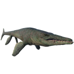

Useful Website
Tylosaurus is a large marine reptile that first existed in the Western Interior Seaway that ran through the United States and Canada during the Late Cretaceous period. Growing to over 14m in length, Tylosaurus is one of the largest mosasaurs ever to have existed, and was the apex predator of its marine environment - studies have shown that it fed on sharks, plesiosaurs and even other mosasaurs.
